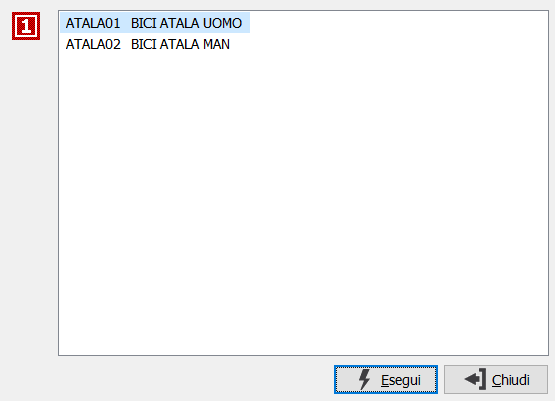

Selezione prodotti nei documenti
Premendo il tasto funzione F11 sul campo prodotto presente nei documenti, mentre si è in modifica del documento oppure in inserimento di un documento nuovo, se il prodotto ha più codifiche per il cliente/fornitore intestatario del documento, si accede alla finestra relativa alla Selezione prodotti.
La finestra mostra le descrizioni associate alle codifiche del cliente/fornitore; selezionando la descrizione desiderata e premendo Esegui questa sarà riportata sul rigo del documento.
